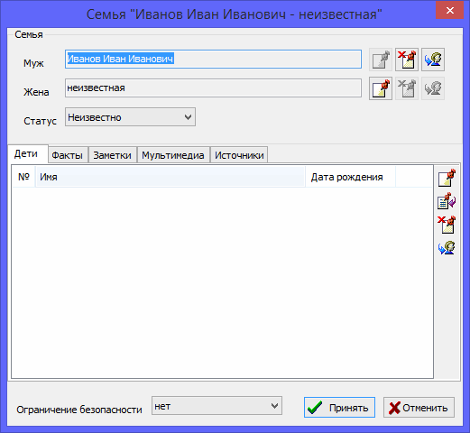

The family record is one of the main record types available in a genealogical database. Family records store information about a family, conjoints, events, and data from the family's life and children. You can also add text notes, references to sources, and multimedia objects into a family record.

There is a table on the "Families" tab of the main working window, where you can find all families stored in the database. Each family record has a summary area to the right of the table, where you can view the entire information about a family, conjoints, children, events, and where you can jump to other records.
Note: if one of the spouses is not indicated in any way in the family record, he is considered unknown (there are specific processing rules for tree diagrams for this); if he is indicated as a person with the name N or any other abbreviation, this is considered an indication of a specific record.
See also: Person, Event, Source, Note, Multimedia, Location, Address.